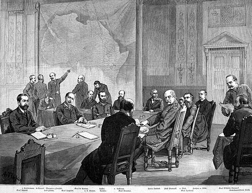
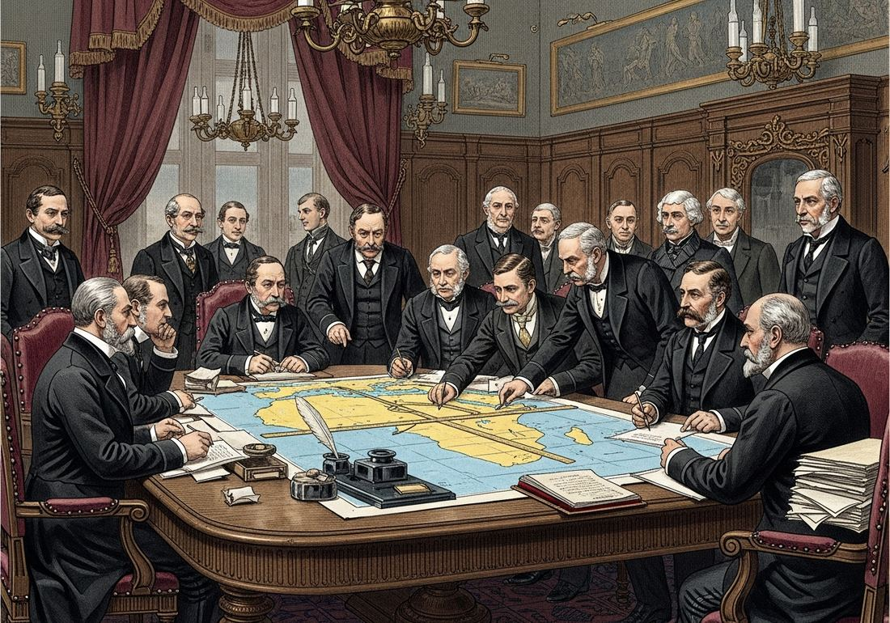

6.2 State Expansion from 1750 to 1900
- LO-A: From company to state control, corporations give way to governments: The British East India Company governed India for nearly two centuries before the 1857 Rebellion prompted Britain to transfer control to the Crown. Similarly, Leopold II’s personal Congo Free State became Belgian state property in 1908 after international outrage. This transition, non-state to state control, is KC-5.2.I.A. The Scramble for Africa and the Berlin Conference (1884–85): European powers carved up Africa so rapidly that they needed a formal conference in Berlin to divide territory without triggering war among themselves. By 1914, only Ethiopia and Liberia remained independent. Britain dominated West Africa and East Africa; France controlled West and Central Africa; Belgium held the Congo. Asia and the Pacific. European, American, and Japanese expansion: Britain formalized control over India after 1857. The U.S. acquired the Philippines, Guam, and Puerto Rico after the 1898 Spanish-American War. Japan, after the Meiji Restoration, seized Taiwan (1895) and Korea (1910). Russia expanded eastward across Siberia to the Pacific. Settler colonies in New Zealand and Australia displaced indigenous peoples permanently. US and Russian land empires, continent-spanning expansion: American Manifest Destiny drove westward expansion across North America: the Mexican-American War (1846–48) added Texas, California, and the Southwest; the Indian Removal Act forced indigenous nations from their lands. Russia’s Trans-Siberian Railroad (completed 1916) bound its continental empire together. Both used warfare, diplomacy, and mass settlement to consolidate vast territories.
Try each question before revealing the answer.
1. Why might a private trading company (like the British East India Company) eventually need to be replaced by direct government control?
2. The Berlin Conference of 1884–85 divided Africa among European powers. Why would European nations agree to divide Africa peacefully rather than fight over it?
3. How was Japanese imperial expansion in Asia similar to and different from European imperial expansion in Africa?
4. American expansion across North America is sometimes not called “imperialism.” What arguments support or challenge that description?
5. What is the difference between a settler colony and an exploitation colony? Why does this distinction matter?
- Compare processes by which state power shifted in various parts of the world from 1750 to 1900
Tap a term for its definition.
-
Definition: A meeting of 14 European nations hosted by Otto von Bismarck in Berlin that established the rules for European colonization of Africa, including the principle of “effective occupation.” Significance: Formalized the Scramble for Africa; divided the continent into European spheres of influence without African representation or consent.
-
Definition: The rapid colonization of almost all of Africa by European powers between approximately 1880 and 1914. Significance: By 1914 only Ethiopia and Liberia remained independent; transformed African political geography and disrupted thousands of existing African states and societies.
-
Definition: A colony where large numbers of colonizers permanently relocate, often seizing indigenous land and displacing local populations. Examples: New Zealand, Australia, South Africa, Algeria. Significance: Distinguished from exploitation colonies by permanent demographic transformation; indigenous peoples face dispossession rather than simply foreign political control.
-
Definition: A major uprising against British East India Company rule in India, sparked by multiple grievances including the introduction of cartridges rumored to be greased with animal fat, offending both Hindu and Muslim soldiers. Significance: Led Britain to dissolve the East India Company and transfer India to direct Crown control (British Raj), exemplifying the transition from non-state to state colonial administration.
-
Definition: Direct rule: colonial power governs through its own administrators, replacing indigenous governance. Indirect rule: colonial power governs through existing indigenous leaders, who become agents of colonial authority. Significance: Britain favored indirect rule in many African and Asian colonies; France preferred direct rule. Both ultimately serve colonial interests but have different impacts on indigenous institutions.
-
Definition: The 19th-century American ideology that U.S. expansion across the North American continent was divinely ordained and inevitable. Significance: Justified the displacement of indigenous nations, the Mexican-American War (1846–48), and the annexation of vast territories from the Pacific to the Gulf; a form of ideological imperialism applied to continental expansion.
-
Definition: The political revolution that restored imperial rule to Japan and initiated rapid industrialization and Westernization to resist European colonization. Significance: Within decades, Japan industrialized sufficiently to become an imperial power itself, seizing Taiwan (1895) and Korea (1910), demonstrating that non-Western nations could adopt imperial methods against their neighbors.
-
Definition: A personal colony of Belgian King Leopold II (1885–1908), where rubber extraction was enforced through extreme violence, including mutilation and murder. Significance: International outrage over Leopold’s atrocities forced Belgium to take control as a formal state colony (Belgian Congo) in 1908; an extreme example of non-state to state transition in colonial administration.
🏢 From Company to Crown: The Transition from Private to State Empire
European expansion did not begin as a government project. For much of the 17th and 18th centuries, it was managed by joint-stock trading companies: the British East India Company, the Dutch East India Company (VOC), and similar enterprises that held royal charters granting monopoly trading rights. These companies were private corporations with their own armies, courts, and administrative systems.
By the mid-19th century, this arrangement was breaking down. The CED identifies this transition as KC-5.2.I.A: some states strengthened their control over existing colonies, including the transition from non-state actor control to direct state governance. The two most important examples are India and the Congo.
In India, the British East India Company had gradually extended control over the subcontinent since the Battle of Plassey (1757). By 1857, it governed 200 million people. But the Sepoy Rebellion of 1857, a massive uprising by Indian soldiers (sepoys) and civilians against Company rule, shocked the British government into action. Parliament dissolved the Company and transferred India to direct Crown control in 1858, beginning the era of the British Raj. India became the “jewel in the crown” of the British Empire.
In the Congo, the transition went the other direction: King Leopold II of Belgium acquired the Congo Free State as a personal possession (not a Belgian colony) at the Berlin Conference of 1885. Leopold’s regime used forced labor and extreme violence to extract rubber, killing an estimated 10 million people. International outrage, documented by journalist E.D. Morel and human rights activist Roger Casement, forced Leopold to cede the Congo to the Belgian state in 1908, making it the Belgian Congo.
🌍 The Scramble for Africa: The Berlin Conference
Between 1880 and 1914, European powers colonized almost all of Africa in what historians call the Scramble for Africa. The speed was astonishing: in 1880, Europeans controlled about 10% of Africa; by 1914, they controlled about 90%, with only Ethiopia and Liberia maintaining independence.
To manage this explosive competition without triggering a European war, Otto von Bismarck of Germany hosted the Berlin Conference in 1884–85. Fourteen European nations (and the United States as an observer) participated. Zero African representatives were invited or consulted. The conference established the principle of “effective occupation”: a nation could claim African territory only if it established actual administrative presence, not merely a flag on a coast. This accelerated the rush to send troops, administrators, and missionaries inland.
The resulting map bore almost no relationship to existing African political boundaries. European borders sliced through ethnic communities, separated related peoples, and lumped together groups with different languages, religions, and histories. These arbitrary borders remain one of the most lasting legacies of colonialism in Africa today.
Key acquisitions included: Britain in Nigeria, Kenya, Uganda, Egypt, and South Africa; France in West Africa and Central Africa; Belgium in the Congo; Germany in Namibia, Tanzania, and Cameroon; Portugal in Angola and Mozambique.

The Berlin Conference, 1884–85 (Kongokonferenz). Fourteen European powers divided Africa among themselves, without a single African representative present. Public domain, Wikimedia Commons.

The Berlin Conference (1884–85): European statesmen divided the African continent into colonial territories at a conference in which no African representative participated (Google Gemini, 2025), commercially licensed. The Berlin Conference (1884–85): European statesmen divided the African continent into colonial territories at a conference in which no African representative participated (Google Gemini, 2025), commercially licensed.
🌏 Asia and the Pacific: Multiple Powers Compete
While Europe scrambled for Africa, imperial expansion in Asia and the Pacific involved more complex competition. The CED identifies KC-5.2.I.B: European states, the U.S., and Japan acquired territories in Asia and the Pacific.
British India became the model of colonial governance after 1858. Britain governed 300 million people through a combination of British administrators and Indian civil servants, building an extensive railway network (built with Indian labor for British benefit), and extracting cotton, tea, and opium. India was the foundation of British global power.
In Southeast Asia, the Dutch consolidated control over the Netherlands East Indies (Indonesia), France conquered Indochina (Vietnam, Cambodia, Laos), Britain took Burma and Malaya, and the U.S. acquired the Philippines after defeating Spain in 1898. The Spanish-American War transformed the U.S. from a continental republic into a Pacific empire almost overnight.
Japan was the most remarkable case. After the Meiji Restoration (1868), Japan deliberately industrialized and adopted Western military technology to avoid colonization. It then used those same methods to build its own empire: winning the First Sino-Japanese War (1894–95) and seizing Taiwan; defeating Russia in the Russo-Japanese War (1904–05), which stunned the world by showing a non-Western nation defeating a European power; and annexing Korea in 1910.
🇺🇸 Settler Colonies: New Zealand and Beyond
The CED specifically identifies New Zealand as an example of a settler colony (KC-5.2.I.D). Unlike exploitation colonies that governed large indigenous populations, settler colonies involved the permanent migration of European populations who displaced indigenous peoples from their land.
In New Zealand, Britain signed the Treaty of Waitangi (1840) with Māori chiefs, promising to protect Māori land rights. Within decades, however, European settlers flooded in, and the colonial government found pretexts to seize Māori land through the Land Wars (1845–1872). Māori lost about 95% of their land. Similar patterns played out in Australia (Aboriginal Australians), South Africa (Zulu, Xhosa, and other peoples), and of course throughout North America.
Settler colonialism differed fundamentally from other forms of empire in its long-term consequences: it permanently transformed the demographic makeup of colonized territories, leaving indigenous peoples as minorities in lands their ancestors had inhabited for millennia.
🛤️ Continental Empires: U.S. and Russia Expand
The CED also recognizes the expansion of the U.S. and Russia as forms of imperial state expansion (KC-5.2.II.B): these states expanded by conquering neighboring territories, building land-based continental empires.
American Manifest Destiny drove expansion from the Atlantic to the Pacific. The Louisiana Purchase (1803) doubled U.S. territory. The Indian Removal Act (1830) forced the Five Civilized Tribes west of the Mississippi on the infamous Trail of Tears. The Mexican-American War (1846–48) added California, Texas, and the Southwest. By the 1890s, Frederick Jackson Turner declared the frontier “closed.” The U.S. then looked outward: Hawaii (1898), Puerto Rico and Guam (1898), the Philippines (1898).
Russia’s expansion moved eastward through Siberia and southward into Central Asia. The Trans-Siberian Railroad, begun in 1891 and completed in 1916, bound the vast Russian empire together and enabled the projection of military power to the Pacific. Russia’s expansion brought it into conflict with Japan, the Russo-Japanese War (1904–05), and established its control over Muslim-majority Central Asian khanates like Bukhara and Khiva.
These videos will help you review State Expansion from 1750 to 1900 and solidify key concepts before your exam.
- India gained independence from British control and established a constitutional republic
- Britain granted India limited self-governance through a new legislative assembly
- The British East India Company was dissolved and India came under direct British Crown administration
- The rebellion inspired similar uprisings across other British colonies in Africa and the Pacific
- European powers to build more extensive transportation networks in existing colonies
- The rapid deployment of European troops, administrators, and missionaries into previously uncolonized African interior regions
- African rulers to formally negotiate treaties with multiple European nations simultaneously
- The formation of international courts to mediate disputes between European and African governments
- Japan’s victory demonstrated that industrialization was the key variable in military competition, not racial characteristics
- The Russo-Japanese War caused European powers to abandon their colonial possessions in Asia
- Asian nationalist movements had been dormant before 1905 and were directly created by Japan’s victory
- Russia’s defeat triggered a European alliance against Japan to prevent further Asian imperial expansion
- Economic imperialism, in which foreign investment rather than military conquest transformed local societies
- Social Darwinism in practice, as the Māori population decline was the result of deliberate genocide
- Indirect rule, in which Māori leaders became agents of British colonial administration
- Settler colonialism, in which permanent migration by colonizers displaced indigenous populations from their land
- The U.S. consistently opposed imperial expansion by European powers throughout the 19th century
- The drive for territorial expansion that had characterized American continental growth extended into overseas imperialism once the continent was “filled”
- Economic stagnation in the 1890s forced the U.S. to seek overseas markets through military conquest
- American expansion was primarily motivated by the desire to spread democracy to the Philippines and Pacific islands
Answer parts A, B, and C. Each part requires a separate short response. Do not write a full essay.
Part A
Briefly describe ONE specific way in which state expansion in Africa differed from state expansion in Asia in the period 1750–1900.
Part B
Briefly explain ONE way Japan’s imperial expansion was similar to European imperial expansion in the period 1850–1910.
Part C
Briefly explain ONE way U.S. expansion across North America (1800–1890) can be compared to European imperial expansion in Africa or Asia.
Write a full essay with a thesis, contextualization, evidence, and historical reasoning. Use comparison as your primary skill. A strong response will identify both similarities and differences and explain their significance.